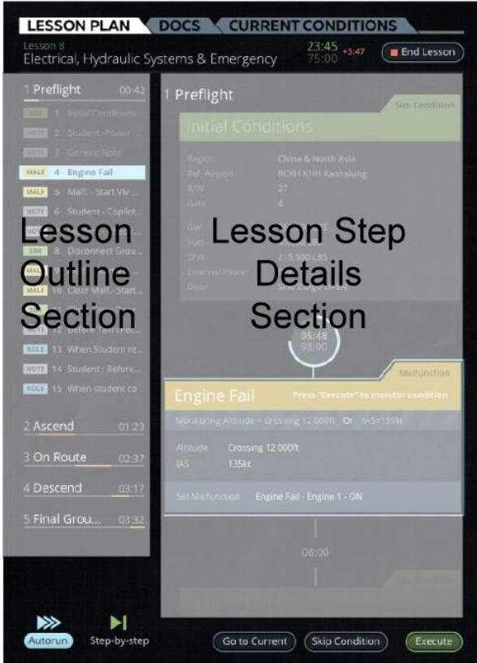
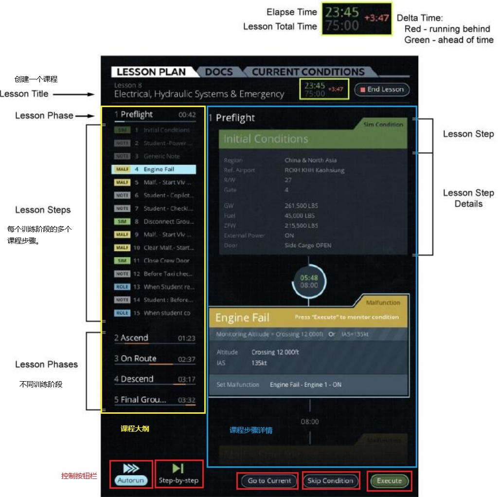
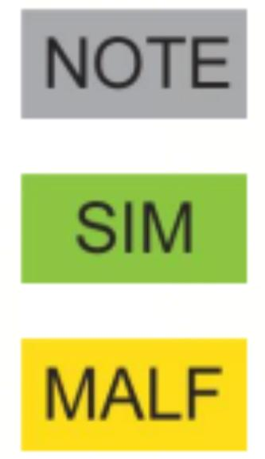

1.2.1 课程计划选项卡 Lesson Plan Tab
原始手册对应：## 5. LESSON PLAN Tab | 整理时间：2026-05-30 | 细化粒度：三级菜单 + 状态流转 + 数据流推导
一、功能层级与界面总览
与 1.5 Lesson Plan Profile 的关系：LESSON PLAN Tab 位于控制面板（Control Board）内部，以文本列表形式呈现课程大纲（左侧）与步骤详情（右侧），是教员加载、控制与执行课程的核心操作入口。与之共享同一套课程数据源的独立工作区 1.5 课程计划配置工作区（Lesson Plan Profile） 则提供了图形化飞行剖面视图（画布 + 琥珀色剖面线），用于鸟瞰课程全局、监控执行进度与时间线。两者分别对应"操作台"与"态势图"两种定位。

核心定位：课程计划选项卡是教员查看、管理和执行训练课程的核心入口。所有课程均通过 CAE Slick 网页编辑器 创建，IOS 上仅支持执行，不支持编辑。
⚠️ 常见困惑澄清：本界面（LESSON PLAN Tab）没有「创建课程」按钮，也不能新建或修改训练阶段/课程步骤。教员在此处只能加载已由 CAE Slick 编辑器编制好的课程，并对其进行执行控制。如需新建课程、修改阶段名称或增删步骤，请前往独立的 CAE Slick 网页编辑器（详见当前页面 2.5 小节「背景说明」）。
场景演练：Lesson 8「单发失效进近」完整操作推演
为帮助教员建立直观画面感，以下以图 1 中的 Lesson 8 为例，完整推演从课程编制 → 加载 → 选中步骤 → 执行 → 观察效果的全链路变化。原始手册对「点击 Execute 后发生了什么」描述较薄弱，本推演基于跨章节运行时状态截图（ch1_5）与数据流推导综合还原。
第一步：CAE Slick 编辑器中编制课程
课程编制者在 CAE Slick 网页编辑器 中创建了 Lesson 8，拖拽出 5 个训练阶段（Preflight → Ascend → On Route → Descend → Final Ground）。在「Descend」阶段下插入了一个 MALF 类型 的步骤，参数设置为：
- 故障类型：Engine 1 Fail（左发失效）
- 监控条件：Monitoring Altitude = 5,000ft，IAS = 135kt
- 激活方式：点击 Execute 后立即注入
保存后，课程自动同步至 IOS，出现在 LESSON PLAN Tab 的课程列表中。
第二步：LESSON PLAN Tab 中加载课程（执行前）
教员登录 IOS，进入 LESSON PLAN Tab，加载 Lesson 8。此时界面呈现图 1 所示状态：
- 左侧大纲：5 个训练阶段展开，第 4 阶段「Descend」下显示红色 MALF 图标，文字为「4 Engine Fail」
- 右侧详情：尚未点选步骤，显示空白或上一个步骤内容
- 底部按钮：Execute 等按钮处于默认状态
第三步：选中 MALF 步骤（已选择状态）
教员点击左侧大纲中的「4 Engine Fail」，界面进入已选择状态：
- 左侧大纲：该步骤被浅蓝色高亮，红色 MALF 图标清晰可见
- 右侧详情：自动切换显示完整参数（Monitoring Altitude、IAS、Set Malfunction 等），底部出现提示：「Press 'Execute' to monitor condition」
- 底部按钮：Execute 变为绿色可用态，Skip Condition 同时亮起（因该步骤带有触发条件）
第四步：点击 Execute（执行中 → 已完成）
教员审阅参数无误，点击 Execute。界面与模拟器同步发生以下变化：
- LESSON PLAN Tab 左侧：步骤旁短暂出现执行标记（如齿轮 ⚙️），随后变为 ✓ 完成标记，高亮移除
- LESSON PLAN Tab 右侧：提示文字消失；Autorun 模式下自动跳转下一步，Step-by-Step 模式下保持完成状态等待教员干预
- 模拟器内部：左发立即失效，驾驶舱 EICAS/ECAM 跳出「ENG 1 FAIL」警告
- AIRCRAFT Tab（1.2.4）：底部 Malfunction Section 新增「Engine 1 Fail」条目
- INSTRUMENT REPEATER（1.4）：发动机仪表（N1、N2、EGT）显示失效数据或变红
- Map Workspace（1.6）：飞机姿态/航迹因推力不对称发生偏移
运行时状态视觉对照
以下四张截图来自 Lesson Plan Profile 工作区（ch1_5），其与 LESSON PLAN Tab 共享同一套课程数据源，因此步骤状态的视觉变化逻辑完全一致，可作为本界面状态流转的直观参照：


💡 关键认知：LESSON PLAN Tab 是「导演控制台」——你在这里发出指令（点击 Execute），但指令的实际效果需要在其他工作区观察。不要试图只在本界面中脑补全部结果；执行 MALF 后请切到 AIRCRAFT / Map / INSTRUMENT REPEATER 确认效果。
1.1 功能层级结构
课程计划选项卡"] subgraph LeftPanel["左侧区域 / Left Panel — 课程大纲"] B["课程大纲
Lesson Outline"] B1["训练阶段 1
Training Phase 1"] B2["训练阶段 2
Training Phase 2"] B3["..."] B1a["NOTE 注释"] B1b["SIM 模拟条件"] B1c["MALF 故障"] B2a["Freeplay 自由操作"] B2b["Nested 嵌套课程"] end subgraph RightPanel["右侧区域 / Right Panel — 步骤详情"] C["课程步骤详情
Lesson Step Details
（可滚动查看）"] end subgraph BottomPanel["底部区域 / Bottom Panel — 控制按钮"] D["控制按钮栏
Tab Buttons"] D1["Autorun 自动运行"] D2["Step-by-Step 逐步运行"] D3["Go to Current 调到当前"] D4["Skip Condition 跳过条件"] D5["Execute 执行"] D6["End Lesson 结束课程"] end A --> B A --> C A --> D B --> B1 B --> B2 B --> B3 B1 --> B1a B1 --> B1b B1 --> B1c B2 --> B2a B2 --> B2b D --> D1 D --> D2 D --> D3 D --> D4 D --> D5 D --> D6 B1a -.->|选中显示| C B1b -.->|选中显示| C B1c -.->|选中显示| C B2a -.->|选中显示| C B2b -.->|选中显示| C style A fill:#2563eb,stroke:#1e40af,stroke-width:3px,color:#fff style LeftPanel fill:#dbeafe,stroke:#2563eb,stroke-width:2px style RightPanel fill:#f0fdf4,stroke:#059669,stroke-width:2px style BottomPanel fill:#fef3c7,stroke:#d97706,stroke-width:2px style B fill:#dbeafe,stroke:#2563eb,stroke-width:2px style C fill:#f0fdf4,stroke:#059669,stroke-width:2px style D fill:#fef3c7,stroke:#d97706,stroke-width:2px style B1 fill:#f0fdf4,stroke:#059669,stroke-width:1px style B2 fill:#f0fdf4,stroke:#059669,stroke-width:1px style B1a fill:#f3f4f6,stroke:#9ca3af,stroke-width:1px style B1b fill:#d1fae5,stroke:#059669,stroke-width:1px style B1c fill:#fee2e2,stroke:#dc2626,stroke-width:1px style B2a fill:#dbeafe,stroke:#2563eb,stroke-width:1px style B2b fill:#ede9fe,stroke:#7c3aed,stroke-width:1px
1.2 界面结构

下方表格中的位置描述基于图 2（LESSON PLAN Tab 界面拆解细节）实际截图分析得出。
| 区域/控件 Area / Control | 位置 Position | 功能说明 Description | 对应核心功能详解 Referenced Section |
|---|---|---|---|
| 课程大纲 Lesson Outline | 左侧区域 Left Panel | 以树形结构列出课程的训练阶段及每个阶段内的步骤 | 详见当前页面 2.1 小节（训练阶段）、2.2 小节（课程步骤） |
| 课程步骤详情 Lesson Step Details | 右侧区域 Right Panel | 可滚动区域，显示当前选中步骤的详细参数和说明 | 详见当前页面 2.3 小节（课程步骤详情） |
| 控制按钮栏 Tab Buttons | 底部区域 Bottom Bar | Autorun / Step-by-Step / Go to Current / Skip Condition / Execute / End Lesson | 详见当前页面 2.4 小节（控制按钮栏） |
🚫 LESSON PLAN Tab 能力边界速查：
❌ 本界面不能做： 创建新课程、新建/重命名训练阶段、增删改课程步骤、修改步骤参数 ✅ 本界面只能做： 加载已有课程、浏览训练阶段和步骤、查看步骤详情、执行/跳过/结束课程 📝 编辑入口在哪： 独立的 CAE Slick 网页编辑器（详见当前页面 2.5 小节「背景说明」）
二、核心功能详解
2.1 训练阶段（Training Phases）
所属区域：课程大纲（Lesson Outline）— 左侧树形列表的顶层分组节点
| 属性 Attribute | 说明 Description |
|---|---|
| 功能定义 Function Definition | 课程按阶段结构化组织，以匹配飞行的各个阶段或培训任务 |
| 创建方式 Creation Method | 由教员在 CAE Slick 编辑器 中自行定义和命名，IOS 界面中不提供创建入口 |
| 层级关系 Hierarchy | 一个课程 → 多个训练阶段 → 每个阶段包含多个课程步骤 |
| 典型示例 Typical Example | 原始手册截图（图 2，Lesson 8）中实际显示的 5 个训练阶段为：1 Preflight（飞行前准备） → 2 Ascend（爬升） → 3 On Route（航路飞行） → 4 Descend（下降） → 5 Final Ground（最终地面）。注意：这仅为该课程的示例，并非软件预置模板，实际阶段名称、数量和顺序均由课程编制者在 CAE Slick 编辑器中自定义 |
2.1.1 课程大纲树形结构
在 LESSON PLAN Tab 左侧的课程大纲（Lesson Outline）区域中，训练阶段是树形结构的顶层节点。每个训练阶段作为一个可折叠的分组容器，本身不可直接执行，仅用于组织和展示其内部的课程步骤。
- 点击训练阶段左侧的展开/折叠图标，可显示或隐藏该阶段内的所有步骤
- 训练阶段的名称、数量和顺序并非软件预置，而是由课程编制者在 CAE Slick 编辑器 中根据实际训练需求完全自定义。如图 2 所示，该课程（Lesson 8）的阶段命名为：Preflight（飞行前准备） → Ascend（爬升） → On Route（航路飞行） → Descend（下降） → Final Ground（最终地面）。其他课程可能采用完全不同的划分方式（如"地面操作"、"起飞"、"巡航"、"进近"等）
- 同一课程内的训练阶段按时间顺序排列，形成完整的训练剖面
2.1.2 训练阶段与步骤的层级关系
2.1.3 训练阶段中英文映射（以 Lesson 8 为例）
下图 2 截图中左侧课程大纲显示的 5 个训练阶段名称及其推荐中文译法如下：
| 序号 | 英文名称（界面显示） | 推荐中文译法 | 对应飞行阶段 |
|---|---|---|---|
| 1 | Preflight | 飞行前准备 / 航前准备 | 地面操作、起飞前检查、推离停机位 |
| 2 | Ascend | 爬升 | 起飞后爬升至巡航高度 |
| 3 | On Route | 航路飞行 / 巡航 | 巡航阶段、航路点过渡 |
| 4 | Descend | 下降 | 开始下降、进场过渡 |
| 5 | Final Ground | 最终地面 / 着陆后地面 | 进近、着陆、滑行、关车（注：该课程将进近/着陆/地面操作合并为一个阶段） |
译法说明：上述中文译法为推荐参考，并非软件强制显示。由于 CAE Slick 编辑器允许课程编制者完全自定义阶段名称，其他课程可能采用如"Ground Ops（地面操作）→ Takeoff（起飞）→ Climb（爬升）→ Cruise（巡航）→ Approach（进近）→ Landing（着陆）"等完全不同的命名方式。教员应以编辑器中实际定义的名称为准。
2.1.4 跨工作区关联
训练阶段不仅是 LESSON PLAN Tab 课程大纲中的树形分组，在课程计划配置文件工作区（Lesson Plan Profile）中同样以可视化方式呈现：
| 工作区 | 呈现方式 | 关联说明 |
|---|---|---|
| 课程大纲（LESSON PLAN Tab） | 左侧树形列表 | 以文字层级展示训练阶段及下属步骤，支持展开折叠 |
| 课程计划配置文件（Lesson Plan Profile） | 画布视图（琥珀色飞行剖面线） | 以图形化方式展示训练阶段与步骤在飞行剖面上的分布 |
说明：课程计划配置文件工作区与控制面板中的课程计划选项卡显示的是同一套课程元素，仅呈现方式不同。选项卡以可滚动列表显示，配置文件工作区以图形化飞行剖面显示。
2.1.4 训练阶段浏览流程
2.2 课程步骤（Lesson Steps）
所属区域：课程大纲（Lesson Outline）— 左侧树形列表内的可执行元素
课程步骤是训练阶段内的具体执行单元，由课程编制者在 CAE Slick 编辑器 中预先设计并插入到对应阶段下。教员在 IOS 的 LESSON PLAN Tab 中只能查看和执行已有步骤，不能新增、删除或修改步骤内容。
步骤分为 5 种类型，通过左侧图标标识：

| 类型 | 标识 | 颜色 | 功能说明 | 交互 |
|---|---|---|---|---|
| 注释 | NOTE | 灰色 | 只读信息，向教员提供提示 | 只读 |
| 模拟条件 | SIM | 绿色 | 执行指令改变模拟器状态 | 可执行 |
| 故障 | MALF | 红色 | 插入故障及触发条件 | 可执行 |
| 自由操作 | Freeplay | 蓝色 | 触发预编程操作集，任意时间可用 | 可执行 |
| 嵌套课程 | Nested | 紫色 | 连接/跳转到另一个课程 | 可执行 |
步骤标识规则详情
展开- 每个步骤左侧显示对应类型的 图标标识（见图 3）
- 自由操作按钮和嵌套课程 没有固定的阶段序号，因为它们可在课程任意时间触发
- NOTE 步骤为纯信息，不参与执行流程计数
2.2.1 课程步骤执行流程
2.3 课程步骤详情（Lesson Step Details）
所属区域：课程步骤详情（Lesson Step Details）— 右侧可滚动区域
| 属性 Attribute | 说明 Description |
|---|---|
| 功能定义 Function Definition | 显示当前选中步骤的详细参数、说明和触发条件 |
| 呈现方式 Presentation | 选项卡右侧可滚动区域 |
| 交互方式 Interaction | 上下滚动查看；点击左侧大纲步骤 → 右侧自动切换 |
| 联动 Linkage | 与课程大纲双向联动，选中即显示 |
2.3.1 课程步骤详情查看流程
2.4 控制按钮栏（Lesson Plan Tab Buttons）
所属区域：控制按钮栏（Tab Buttons）— 底部操作栏
2.4.1 按钮总览
| 按钮 | 英文 | 类型 | 功能 | 前置条件 | 异常/边界 |
|---|---|---|---|---|---|
| 自动运行 | Autorun | Action Button | 运行已设置为自动运行的步骤 | 课程已加载 | 无自动步骤时状态待确认 |
| 逐步运行 | Step-by-Step | Action Button | 逐步运行，每步需确认 | 课程已加载 | 首次点击进入逐步模式 |
| 调到当前 | Go to Current | Action Button | 右侧显示当前步骤 | 课程正在运行 | 无当前步骤时可能禁用 |
| 跳过条件 | Skip Condition | Action Button | 跳过步骤关联条件 | 当前步骤有条件 | 无条件时禁用 |
| 执行 | Execute | Action Button | 执行当前步骤 | 已选中步骤 | 未选中时禁用 |
| 结束课程 | End Lesson | Action Button | 结束当前课程 | 课程正在运行 | 未运行时禁用 |
2.4.2 自动运行与逐步运行对比
| 对比维度 | 自动运行（Autorun） | 逐步运行（Step-by-Step） |
|---|---|---|
| 执行方式 | 系统自动依次执行 | 每步需教员手动点击 Execute |
| 教员干预 | 无需干预 | 必须确认后才能执行下一步 |
| 适用场景 | 标准化流程、重复性训练 | 需教员评估或调整的场景 |
| 步骤类型限制 | 仅执行标记为自动运行的步骤 | 执行所有步骤 |
| 异常处理 | 按预设逻辑自动处理 | 教员可决定跳过或修改 |
2.4.3 控制按钮栏操作流程
2.5 步骤执行后的场景与状态变化
本章说明：本节是文档中最容易让读者产生困惑的部分，因此需要特别详细说明。以下描述基于原始手册文字、图 2 截图分析、ch1_5 课程计划配置工作区的运行时状态截图，以及跨章节逻辑推导综合得出。
💡 核心问题解答：点击 Execute 后到底发生了什么？
简言之：指令下发 → 模拟器响应 → 界面状态更新 → 自动推进或等待下一步。具体表现因步骤类型而异，详见下方各节。
2.5.1 执行前 vs 执行后的界面对比
以图 2 中的 Lesson 8 为例，当教员选中左侧大纲中的步骤 4「Engine Fail」（MALF 类型）时，界面处于「执行前」状态：
- 左侧大纲：步骤 4 被高亮选中（浅蓝色背景），左侧显示红色 MALF 标识
- 右侧详情：显示 Engine Fail 的完整参数（Monitoring Altitude、Altitude、IAS、Set Malfunction 等），底部出现提示文字「Press 'Execute' to monitor condition」（点击 Execute 以监控条件）
- 底部按钮：Execute 按钮可用（绿色/激活态），Skip Condition 根据该步骤是否有条件触发条件决定是否可用
点击 Execute 后，界面进入「执行中」状态：
- 左侧大纲：步骤 4 保持高亮，可能短暂显示执行中标记（如齿轮图标或闪烁边框）
- 右侧详情：提示文字消失，可能显示「Executing...」或直接进入结果确认状态；对于 MALF 步骤，故障参数（如 Engine Fail - Engine 1 - ON）被发送至模拟器
- 底部按钮：Execute 按钮在执行期间可能短暂禁用，防止重复点击；执行完成后重新可用
执行完成后，界面进入「已完成」状态：
- 左侧大纲：步骤 4 显示完成标记（如对勾 ✓ 或颜色变淡/灰化），表示该步骤已执行完毕
- 右侧详情：
• Autorun 模式：自动加载并显示下一个自动步骤的详情
• Step-by-Step 模式：保持当前步骤的完成状态，等待教员手动选择下一步骤后点击 Execute - 底部按钮：Go to Current 按钮可用于快速定位到当前正在执行的步骤
2.5.2 五种步骤类型的执行效果对比
不同类型的步骤点击 Execute 后，模拟器和界面的反应截然不同。这是理解 LESSON PLAN Tab 操作逻辑的关键：
| 步骤类型 | 点击 Execute 后模拟器发生什么 | 界面视觉反馈 | 执行耗时 |
|---|---|---|---|
| NOTE 注释 | 无任何变化。NOTE 是纯文本提示，不向模拟器发送指令 | 步骤标记为「已读/已完成」，可能显示对勾；右侧详情保持显示提示文本 | 瞬时 |
| SIM 模拟条件 | 模拟器状态改变。例如：飞机高度调整至 12,000ft、IAS 设为 135kt、位置重新定位等。具体变化取决于步骤中定义的参数 | 步骤显示执行中标记 → 完成后显示对勾；右侧详情可能显示参数生效确认；Map 工作区中飞机位置/状态实时更新 | 通常瞬时，复杂 reposition 可能需数秒 |
| MALF 故障 | 故障被激活或预位。例如：Engine 1 Fail 被注入；模拟器仪表（如 EICAS/ECAM）立即显示相关警告。若步骤定义为「预位」，则故障等待触发条件满足后才生效 | 步骤显示完成标记；AIRCRAFT Tab 底部 Malfunction Section 更新显示新故障；Footer 状态指示灯变化；INSTRUMENT REPEATER 中相关仪表显示警告 | 瞬时激活，预位故障等待条件 |
| Freeplay 自由操作 | 预编程操作集立即生效。例如：一键设置特定天气场景、一键调整多个飞机参数。可在课程任意时间点触发，不受当前阶段限制 | 步骤显示完成标记；Map / Current Conditions / Aircraft 等关联工作区参数同步更新；通常伴随弹出确认提示 | 瞬时 |
| Nested 嵌套课程 | 加载并执行子课程。当前课程暂停，左侧大纲切换为子课程的训练阶段和步骤列表。子课程执行完毕后，自动返回主课程并继续后续步骤 | 左侧大纲内容完全替换为子课程；右侧详情显示子课程第一个步骤；课程标题可能显示嵌套标识；执行完成后大纲恢复为主课程，并在原 Nested 步骤处标记完成 | 取决于子课程长度 |
2.5.3 为什么你很难脑补？——原始手册的盲区
正如你感受到的困惑，原始手册在「执行后」这一环节的描述确实非常薄弱。原因如下：
- 手册侧重「操作入口」而非「执行反馈」：原始手册告诉你按钮在哪、怎么点，但很少展示点击后的界面截图（图 2 是少数展示执行前状态的截图）
- 执行效果高度依赖步骤内容：同一个 SIM 步骤，有的改变高度，有的改变位置，有的改变天气——手册无法穷举所有执行后的具体画面
- 跨工作区反馈分散在各章节：MALF 执行后的故障显示在 AIRCRAFT Tab（1.2.4），位置变化反映在 Map（1.6），仪表警告在 INSTRUMENT REPEATER（1.4）——这些信息在 LESSON PLAN Tab 的手册章节中没有集中说明
给阅读者的建议：阅读本节时，请始终记住——LESSON PLAN Tab 是「导演控制台」，你在这里发出指令（点击 Execute），而指令的实际效果需要在其他工作区（Map、AIRCRAFT、INSTRUMENT REPEATER）中观察。不要试图只在 LESSON PLAN Tab 这一个界面中脑补全部结果。
2.5.4 课程执行状态流转（可视化速查）
以下状态流转适用于单个步骤的生命周期，与 ch1_5 课程计划配置工作区中的运行时状态一致（两者共享同一套课程数据源）：
| 状态 | 左侧大纲视觉表现 | 右侧详情内容 | 教员操作 |
|---|---|---|---|
| ① 未选择 | 默认显示，无高亮 | 显示上一个已选中步骤的内容，或空白 | 点击左侧步骤选中它 |
| ② 已选择 | 步骤高亮（浅蓝色背景），类型图标（NOTE/SIM/MALF 等）清晰可见 | 显示该步骤的完整参数和说明，底部提示「Press 'Execute' to monitor condition」 | 审阅参数，确认无误后点击 Execute；或点击 Skip Condition 跳过 |
| ③ 执行中 | 步骤保持高亮，可能显示短暂执行标记（如齿轮图标 ⚙️ 或闪烁边框） | 提示文字消失，可能显示「Executing...」或直接进入结果状态 | 等待系统完成（通常瞬时完成，复杂 reposition 需数秒）；期间 Execute 按钮可能禁用 |
| ④ 已完成 | 步骤显示完成标记（✓ 对勾 或 颜色变淡/灰化），高亮移除 | Autorun 模式：自动切换至下一个步骤详情；Step-by-Step 模式：保持当前完成状态，等待教员选择下一步 | 观察执行效果（切换至 Map / AIRCRAFT / INSTRUMENT REPEATER）；确认后继续下一步或结束课程 |
2.6 课程创建与编辑（背景说明）
定位说明：本章节为 CAE Slick 编辑器的背景信息，不对应 LESSON PLAN Tab 界面内的具体区域
⚠️ 重要提示：很多初次使用 IOS 的教员会寻找「创建课程」或「新建训练阶段」的按钮，但在 LESSON PLAN Tab 界面上不存在此类功能。课程、训练阶段、步骤的创建与编辑全部在独立的 CAE Slick 网页编辑器 中完成。本选项卡仅用于加载并执行已编制好的课程。如果您需要新建或修改课程，请退出 IOS 界面，前往 CAE Slick 编辑器操作。
编辑器工具与可添加元素
展开工具名称：CAE Slick 基于网页的课程计划编辑器（详见 TPD 19709）
| 元素类型 | 说明 |
|---|---|
| 注释（Notes） | 向教员提供信息的只读文本 |
| 模拟器条件（Simulator Conditions） | 改变模拟器状态的指令集 |
| 故障（Malfunctions） | 定义故障类型、触发条件、参数值 |
| 自由操作按钮（Freeplay Button） | 预编程的操作集，可随时触发 |
与 IOS 关系：编辑器创建的课程保存后自动出现在 IOS 课程计划选项卡中；教员在 IOS 上只能执行，不能编辑。LESSON PLAN Tab 不是课程的创建入口，而是课程的消费入口。
三、全局操作流程与推导
3.1 LESSON PLAN Tab 教员核心操作流程全景图
下图汇总了 Chapter 1 全部子章节（2.1~2.4）的核心操作流程，形成从加载课程到执行完成的完整闭环。教员可从任意入口触发对应功能；每个功能内部的关键操作步骤均在对应纵向 subgraph 中展开。如需查看各功能更详细的字段属性与边界行为，请参见对应子章节的横向流程图（2.1.4、2.2.1、2.3.1、2.4.3）。
3.2 课程执行通用状态机
3.2.1 状态说明
| 状态 State | 说明 Description | 转换条件 Transition Condition |
|---|---|---|
| IDLE 课程未运行 | 空闲，课程已加载但未启动 | 加载课程后进入；Autorun → AUTO_RUNNING；Step-by-Step → STEP_RUNNING |
| AUTO_RUNNING 自动运行中 | 系统自动依次执行步骤 | 步骤完成 → 继续下一步 或 COMPLETED |
| STEP_RUNNING 逐步运行中 | 逐步运行模式，等待教员确认 | Execute → 执行当前步骤；Skip → 跳过当前步骤 |
| STEP_EXECUTING 步骤执行中 | 当前步骤正在执行 | 成功 → 加载下一步；失败 → STEP_ERROR |
| STEP_ERROR 步骤执行失败 | 步骤执行出错 | 重试 → STEP_EXECUTING；Skip → 加载下一步 |
| COMPLETED 课程已结束 | 课程执行完成 | 自动返回 IDLE |
| ABORTED 课程被中断 | 教员点击 End Lesson 中止 | 返回 IDLE |
3.3 关联依赖与异常边界
3.3.1 关联依赖
| 功能点 Feature | 依赖项 Dependency | 说明 Description |
|---|---|---|
| 课程计划选项卡 Lesson Plan Tab | CAE Slick 编辑器 CAE Slick Editor | 课程数据源，无课程则选项卡为空 |
| 执行步骤（SIM） Execute Step (SIM) | 模拟器核心系统 Simulator Core | 步骤指令需模拟器响应才能生效 |
| 执行步骤（MALF） Execute Step (MALF) | 故障系统（8.12） Malfunction System | 触发故障需与故障滑动面板联动 |
| 结束课程 End Lesson | 课程计划剖面工作区（2.5） Lesson Plan Profile | 结束后课程计划剖面同步更新状态 |
| 课程状态 Lesson Status | 控制面板底部 Footer（1.2.7） Control Panel Footer | 课程运行状态可能在 Footer 指示 |
3.3.2 异常边界
| 场景 Scenario | 预期行为 Expected Behavior |
|---|---|
| IOS 上无可用课程 No Lesson Available | 课程大纲区域为空，控制按钮禁用 |
| 课程执行中模拟器冻结 Simulator Freeze During Execution | 执行暂停，解冻后恢复或需重新执行 |
| 点击 End Lesson Click End Lesson | 立即停止执行，返回课程选择状态 |
| 步骤执行失败 Step Execution Failed | 显示错误提示，教员可重试或跳过 |
3.4 数据流与开发流程推导
3.4.1 数据流（课程执行）
教员点击 Execute
↓
IOS 发送课程步骤执行请求（步骤ID + 参数）
↓
模拟器核心系统解析步骤指令
↓
根据步骤类型执行不同操作：
├─ NOTE → 仅显示信息，无状态变更
├─ SIM → 修改模拟器参数（高度/速度/环境等）
├─ MALF → 调用故障系统，激活/预位故障
├─ Freeplay → 触发预编程操作集
└─ Nested → 加载并跳转至子课程
↓
模拟器返回执行结果
↓
IOS 更新界面状态（步骤标记完成、加载下一步）3.4.2 API 接口契约建议
| 接口 API | 方法 Method | 请求字段 Request | 响应字段 Response |
|---|---|---|---|
getAvailableLessons | GET | - | lessonList: [{id, name, phases[]}] |
getLessonDetail | GET | lessonId | phases: [{phaseId, name, steps}] |
executeStep | POST | lessonId, stepId, mode | status, message, nextStepId? |
skipCondition | POST | lessonId, stepId | status, nextStepId |
endLesson | POST | lessonId | status |
四、测试要点
| 测试类型 Test Type | 测试场景 Test Scenario |
|---|---|
| 正向路径 Positive Path | 加载课程 → 自动运行 → 所有步骤正常执行 → 课程完成 |
| 正向路径 Positive Path | 加载课程 → 逐步运行 → 逐一点击 Execute → 课程完成 |
| 异常路径 Error Path | 无课程时，确认所有控制按钮禁用 |
| 异常路径 Error Path | 执行中点击 End Lesson，确认课程立即终止 |
| 边界条件 Boundary | 课程仅包含 NOTE 步骤，确认无需要执行的指令 |
| 边界条件 Boundary | 课程包含嵌套课程，确认嵌套课程正常加载和返回 |
| 联动测试 Integration | 执行 MALF 步骤后，确认故障滑动面板显示对应故障状态 |
五、变更记录
| 日期 Date | 版本 Version | 变更内容 Changes |
|---|---|---|
| 2026-05-30 | V0.1 | 完成课程计划选项卡细化整理，包含功能总览、界面结构、课程大纲、步骤详情、控制按钮栏、课程创建、关联依赖、数据流推导、测试要点 |
| 2026-06-02 | V0.2 | 按规范V1.6重构为三层架构：一、功能层级与界面总览；二、核心功能详解（2.1~2.5）；三、全局操作流程与推导（3.1核心流程+3.2通用状态机+3.3关联依赖+3.4数据流）；四、测试要点；五、变更记录。修复导航链接，修正Mermaid节点格式 |
| 2026-06-02 | V0.3 | 补充丰满2.1训练阶段：新增2.1.1课程大纲树形结构说明、2.1.2训练阶段与步骤层级关系图（Mermaid TB）、2.1.3跨工作区关联（Lesson Plan Profile画布视图）。原2.1.1浏览流程图改为2.1.4，同步更新3.1全景图中的交叉引用 |
| 2026-06-02 | V0.4 | 1. 建立1.2界面结构与2.x核心功能的明确映射：1.2表格新增"对应核心功能详解"列；2.1~2.5各章节开头新增area-map区域归属提示；2.5明确标注为"背景信息，不对应具体区域"；2. 全量表格属性列及关键术语补充英文对照（Attribute/Description/State/Scenario/API等）；3. 飞行阶段典型示例补充英文（Ground Operations/Takeoff/Climb/Cruise/Approach/Landing） |